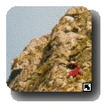

| Jim's Site | |

Last Updated: Wed Jun 09 14:14:55 BST 2004
I spend the intervening hour sorting out my gear. This involves organising it into a pile in the middle of the floor. I check out the route, and discover that it is covered by two of my guidebooks. The area guide is a little more terse in it's description than the other guide, but, being in a small soft cover, is much more amenable to being stuffed in a chalk bag and carried up the route. For maximum confusion while climbing I copy the description from the larger hardback guide onto a Post-It and stick it into the area guide.
Eleven O'Clock, Fred rings back, saying he's just woken up. I later found out that he hadn't got to bed until three o'clock that morning.
Twelve O'Clock, we hit the road. At least I get as far as the pavement. Fred makes it as far as the front door before he realises he's left his car keys in my flat.
Finally we are on our way. Fred likes to describe his car as 'classic', the rest of us like to describe it as 'a bloody mess'. At least the seats are back in it now, although the passenger seat does lurch around violently as if attempting to leave the vehicle when it corners.
"Oh dear. That's not your hat is it?", says Fred as we speed through one of the villages outside Bristol. I reach behind my seat and put my hand into a freezing cold, soggy mass. The roof in Fred's car leaks, but the floor doesn't. After a spell of bad weather a small pond accumulates in the footwell behind the passenger seat, this footwell is not a good place to store hats, or, as Fred discovered, your climbing guides. I have suggested to Fred on many occasions that the solution to this problem is to always park his car upside down, that way the water would seep away quietly through the roof, and would be unable to penetrate through the floor, but he has chosen to ignore this sage advice.
From the description in the guide it looks like alternate leads may not be the best way to attack the climb. That way one person gets to lead all the best pitches, and the other person the poorer ones. However, I am unable to determine an optimal strategy that allows us to share the leads in a better way, but still minimises the amount of messing around we have to do on stances, so we decide to postpone the decision until we are on the climb and have a better idea of what we can do at each stance. The fallback position is just to alternate leads, so we toss for it. Fred wins the honour of leading the first pitch and the subsequent poorer ones.
We arrive in Cheddar. A positive mecca for tourists who wish to purchase cider and cheese. Cheddar is also gateway to Cheddar Gorge, a huge gash in the Mendips where tourists can risk being bombarded from the limestone cliffs above and gape at climbers risking being strangled by the vegetation. As we pass through the village Fred suddenly declares "I need a drink", stops the car in the middle of the road outside a pub, and dashes out. Fortunately he returns a few minutes later, not with a quart of scrumpy, but with a can of Tango.
"That's 'Coronation Street'", says Fred, as we drive past High Rock. It is a classic line up an impressive piece of rock. First climbed by Bonington in the sixties, the ascent was shown live on television. There is a party on each pitch of the climb.
"Hang on, I think that was it", I say as we scream past the crag and continue around Horseshoe Bend. Fred pulls a U-turn and returns us to the car park. He doesn't so much park the car as abandon it in total disregard to the parking slots painted on the ground.
One O'Clock, we are standing at the base of Great Rock, the highest crag in the Gorge. Most of the lower part of the rock face is in the shadow of one of the other cliffs, and a chill still hangs in the air.
"Well, it looks like we were the only ones to have this brilliant idea", I say, indicating the absence of climbers on our intended route.
The only other car in the car park also belongs to climbers. They gear up, grab their ropes and walk to the base of Sunset Buttress, an enormously impressive overhanging crag. They are Hard Men. As they pass us, we exchange monosyllabic grunts of recognition.
I cross to the other side of the road and try to reconcile the photograph with the route marked on it with the crag in front of me. In the photograph huge areas of the crag are black, whereas the rock in front of me has more of a uniform shade of pale green when viewed from a distance. However it is clear that we are, at least, underneath the right piece of rock.
"Looks a bit vegetabled", I comment to Fred, "but it could be worse". The most confusing issue now is trying to determine where the route actually starts. The lower part of the face comes down all the way to the road. To start at the bottom would appear to mean belaying in the face of the oncoming traffic, and climbing mostly on mud and ivy. This can't be right. I return to the car to consult the other guidebook.
The diagram shows a footpath along the base of the crag, some way from the road. It occurs to me that it follows roughly the same line as a muddy sloping ramp that rises to about fifty feet up the crag.
"I reckon it starts up there", I wave vaguely toward the ramp, and re-cross the road to examine it more closely. From the bottom of the ramp the detached pinnacle that forms the first pitch is clearly visible. Sunset Buttress shows through the gap. The first stance is on the top of this pinnacle.
We gear up. I cut a packet of fig rolls in half and put them in my chalk bag, along with the guide book and a camera. We head off up the muddy ramp, it has the consistency of moist compost. Luckily it is wider than it looks from below.
We arrive at the bottom of the first pitch. By this stage our boots have collected about half an inch of mud on their soles. We start to look around for likely belay anchors. All the obvious cracks are formed by loose blocks. Low down I find a reasonable #2 nut placement, so we use that and a tree stump sticking out of the mud.
Fred leads off, up the first pitch. It's a loose, vegetated groove. Each hold and placement needs to be checked and re-checked before it is used, in case the rock just comes away in your hands. Slowly but surely Fred gains height, until he reaches the top of the pinnacle, he makes a stance, and I don my rock boots.
One of the Hard Men dislodges a rock. A shout of "Below" echoes around the Gorge, as the projectile plummets down the line of their ropes without touching the cliff. The Gapers on the road look around at the sound of the cry, but they don't know what it means, and miss the point as the rock plummets harmlessly into the undergrowth at the bottom of the cliff.
Following Fred up the first pitch, I see why it is necessary to take ones time. The moves are technically easy but the rock is loose, and the vegetation everywhere. I arrive at the stance; Fred is sitting on top of the detached pinnacle, belayed to a large flake and grinning like a maniac. The pitch below us seems to be a lot steeper looking down it from above than looking up from below. We don't appear to have made much horizontal progress away from the road.
It's now my turn to lead. I leave Fred on the pinnacle, tied to the flake. According to the Post-It note with the route written on it I should "Climb for a few feet then move left with difficulty (peg runner)...". I step up onto the flake and find another enormous flake above me. I sling it with a twelve foot sling and clip in.
"No sign of the peg yet", I call down to Fred, and move up, placing a nut. The peg is in the middle of a short blank wall to my left, there are some hand holds in a horizontal break a good six feet above it, but no foot holds. I step up onto a muddy ledge, below and to the right of the peg. I clip in to the peg and look around for the holds beyond the peg. There is a tiny niche in the rock between me and the peg, I experiment and find a foot can be twisted into it to give a quite good hold. The next place to put my feet is a sloping ledge roughly level with my head but about six feet to my left, and there's no gear until after the ledge. I move up on the twisted foot and try to reach the hand holds in the break, but it's too far away.
After several abortive attempts at the same manoeuvre I decide that I might be able to traverse below the peg and then ascend the wall beyond it. On the face of it, it looks as though this would require some advanced levitation, but I feel sure something will turn up. I traverse for a few feet until I run out of hand holds and am standing on a piece of turf of unknown security, and then reverse the manoeuvres to return to my previous position. To delay the inevitable decision I spend some time trying to fiddle a hex in above the peg for additional security, but the crack rejects all attempts to seat the gear. Eventually I persuade it to accept a #5 nut.
Below, down in the road, I hear a young Gaper ask it's father "Daddy, how are they going to get down from there?", I think to myself that the child has a very good point and strain to hear some kind of authoritative answer, but none is forthcoming.
Again I place my foot into the niche and twist it until it holds. I stand up on to the hold and make a wide bridging move onto a muddy ledge, as before. I reach for a fat pinch grip and move my foot from the muddy ledge to a smaller ledge below the twisted foot. I reach up for the hold in the horizontal break. Six inches... four inches... I lift my foot off the ledge... got it! I'm now standing with my entire weight on the twisted foot, supported by one hand in the horizontal break. I reach up with my right hand for another hold, just in reach on the other end of the break. I'm now completely extended in a crucifix position, with my nose against the wall, standing entirely on my twisted foot, which by this time is starting to feel distinctly uncomfortable, and my last piece of protection is a rusty old peg. The sloping ledge is still to my left, but now about waist height. I lift my free foot onto the ledge, but the mud on the soles means that it just skids around. Shit! There's no way I can lower myself back to the muddy ledge now. I look around desperately trying to find any kind of hold. Suddenly I notice right in front of my nose, there's another hold in the horizontal break, and it only has one or two snails in it. I get my right hand from the almost out of reach hold to the one in front of my face. I can now pull up, freeing my twisted foot, and try to get more weight over my left foot, and hope it stops sliding around. It does! I move more weight onto it, and lean around the corner. The wall beyond the corner is completely smooth, how the hell am I going to get back in balance. Above the turmoil of my thoughts I hear a Scandanavian voice shouting "Go on!", in the quaint way Fred has of making it sound less like a friendly piece of encouragement and more like a military order. I lean further over and bring my other foot onto the sloping ledge, my fingers creeping further and further across the blank wall around the corner, suddenly they sink into a crack and I've got a great hold, I pull round into the corner and move my feet into a slightly more sensible position. I'm shaking wildly, it occurs to me that I'm now a good few feet above the rusty peg, and a good deal further above the last piece of gear I placed myself. I see a suspiciously wedged stone in the finger crack, remove a sling from around my neck and drop one end behind the stone and then clip the loop to the rope. "Runner on", I gasp.
"Well, you certainly scared me," calls Fred from the relative security of his stance. I gulp down another breath and move on up the corner, trying to stop shaking.
Above the corner the climbing is easier, but the rock is once again shattered and loose. I put some gear in a crack between two huge blocks that look least like moving and continue up the muddy ledges to the stump of what the guide book says is a large yew tree. Just feet below the safety of the tree stump, but well out of sight of my last piece of gear, I am suddenly gripped by the fear of slipping on the mud and meeting up with Fred much sooner than either of us anticipated. Glued to the spot I unclip my largest camming device from my belt and fire it into a large crack in a block below the stump. Feeling somewhat more secure I spend a not inconsiderable amount of time setting up a stance, using the tree only as a backup anchor, and placing a large nut in the continuation wall.
From my stance the rope runs over muddy ledges covered in loose rocks, before dropping down the steeper corner and wall to the patient Fred. Out of concern for the safety of the Gapers below I try to take the rope in during breaks in the traffic. People drive past, pointing up at us through their sunroofs. From below you don't see the hundreds of ledges piled with rocky debris waiting to launch itself down the slopes into the road.
"Climb when ready, Fred", I yell into the void below me, hoping that he is still awake to respond to my cries. I try to take the rope in carefully to avoid dislodging any of the debris on the ledges below me. It seems to be going well when suddenly I notice a rock bounce down the cliff below me.
"Below!" I yell, as it bounces out of sight. There are no screams, thuds or crashes, and the rock doesn't appear in the road below me, so I assume it's been intercepted by some ledge further down.
In the fullness of time, Fred's helmet appears below me and he joins me at the stance, putting a sling around one of the roots of the tree stump.
"Are you safe there?", I ask him, trying not to make it sound like I think he might at any time plummet off the cliff attached to half a ton of wood, but he seems to be quite at home on these precarious stances.
"That was quite a scary move", he says, as if I need to be reminded of it, "even on a top rope".
Meanwhile the Hard Men have finished the VS they started on, it has conveyed them to the bottom of the huge overhangs. One of them sets off up the wall. The routes here are graded E6. They draw quite a crowd of Gapers, and Fred and I can pretend that they are pointing at and photographing us, but the tourists soon get bored and wander off.
The description for the next pitch starts with the word "easily" and it is quite short, but the following pitch is one of the longer harder ones. I suggest to Fred that he might like to lead both of these pitches. I'm hoping that this sounds like a magnanimous offer on my behalf rather than an act of desperation. Fred gracefully accepts the offer, either out of enthusiasm or pity.
Watching Fred's several attempts to gain height on the wall beyond the stump, does not make the word "easily" come to mind, but he eventually manages to make progress at the cost of a little grace. He pulls over the top of the wall and disappears onto a broad terrace above. Shortly afterwards I follow him. I arrive at the top of the wall to see Fred belayed to the first tree we have come across that hasn't been pruned with extreme prejudice using a chainsaw. Between us is a broad muddy slope covered in nettles, and rather more worryingly, loose rocks. I cross this, clutching at clumps of grass but manage to dislodge a rock, which slides off into the undergrowth below.
This part of the climb is shown on the topo as a dashed line with an arrow helpfully pointing up. The dashed line is absent at the exact place we stand. Co-incidentally this is also the only place where we can possibly go wrong and end up on a neighbouring route. The other route starts off only a grade harder than the route we are climbing, but the following two pitches are three grades higher than our climb. This is a good time to ensure we are on route.

"This looks like a flake crack", says Fred.
"Good", I reply, making it clear I'm not going to venture from the safety of the tree to offer my opinion, I have decided that if this is what climbing at Cheddar is like I can gladly do without it. He returns to collect the gear from the last pitch.
The sun begins to rise above the castellated ridge beyond us, and the chill in the air is somewhat subdued. The remaining three pitches above us look more solid, but also steeper. Fred starts the fourth pitch, the crack he has found is round a corner some thirty feet distant from the stance. He disappears from view but appears to get several pieces of gear in before he re-emerges into the sun.
"There's quite a lot of polishment here", he calls down, "I think we might be on route". I fish my camera out of my chalk bag and point it in Fred's direction, but it refuses to work.
Fred steps up again, but this time moves left, he fiddles a piece of gear in, and carries on. Another placement, he reaches high, pulls up, and places his foot into a horizontal break. He explores the rock above with his hands and then comes down.
"Actually, this is quite hard", he says in a calm, matter-of-fact way. Then suddenly for no apparent reason he reaches into a mass of ivy to the left of the climb and pulls out a cord, he clips a runner into it, and repeats the moves, this time continuing to the top of the rib.
By this time the sun has sunk behind the ridge again, so while Fred is setting up his stance on the nice warm rock, I am shivering on the terrace attached to a tree. I leave the stance as soon as possible and move up to the base of the pitch and back into the sun.
About half way up the pitch I come to a blank section where Fred has managed to fiddle the #00 nut into a hairline crack. This is the smallest piece of protection in our arsenal, a thin sliver of metal just three millimetres thick. It provides marginal physical protection, but the psychological protection it gives is out of all proportion to it's size. "He must have been desperate", I think. I unclip my nut key to try to remove it, but the crack is thinner than the tool. After some patient wiggling the piece comes free and I carry on. The next piece of gear is a #1 nut, the second smallest piece of gear we are carrying. It is placed in the side of a vertical open chimney, I try to free a hand to remove it, but can't stay in balance. I wedge my leg into the chimney and then remove the nut. The next piece of gear is the in-situ cord, I find that if I leave the chimney there are plenty of small holds on the face beyond. This gives me an ideal view of what the cord is attached to. It disappears into an ivy filled crack and into a large nut surrounded by snails, the cord appears to be rotting away, and I wonder if it's the nut that's holding it in or the snails. After a couple of hard moves and some easier ground, which I'm glad Fred led, I reach the next piece of gear, another #1 nut, placed just round a corner below Fred's feet.
"I'm not very proud of that placement", Fred comments as I try to fish it out, however I only succeed in pushing it slightly deeper into the crack. The nut is now loose, but is rattling around inside a cavity which it won't seem to come out of.
"Why don't you leave it there", asks Fred, "it's only one of yours".
After several minutes of wiggling and prodding with the nut key I pull my penknife out of my chalk bag and try to use that to free it, then I decide it's incredibly foolish to have an open blade this near to the rope so I put it away again and try the same trick with the #00 nut.
"Hey, good idea", says Fred, "get another one stuck in there too". The nut continues to make it's bid to remain in-situ. I'm almost resigned to the fact I'll have to leave it behind. I climb a little higher so that the nut is level with my feet.
"Take me tight on the rope", I tell Fred. I reach down and heave on the other end of the quick-draw, the gear flies into space. Another victory for brute force.
I join Fred at the stance, another tree stump, which Fred has carefully woven several slings around, above a small ledge. He fishes a sling out of the spaghetti and offers it to me to clip into. Relatively safe, I look down into the car park below us, we still don't seem to have made much horizontal progress.
We swap the gear over, it's my turn to lead again. "Those people down there", I nod towards a small group of Gapers standing in the car park at the base of the route, "must think we're a couple of berks".
"What's a berk?" asks Fred.
"Oh, colloquial term, actually derived from Cockney rhyming slang; 'Berkshire Hunt', 'Cunt'; but in general usage it means a foolish chap. I mean, here we are three hundred feet above them tied to a tree stump, standing on a tiny ledge, they must be thinking, 'What a couple of foolish chaps'"
Fred looks down, into the drop between us and the car park, "I suppose you're right". With that thought in his mind I leave the stance, or at least I attempt to. To get on to the next part of the climb I need to get above a tiny overhang surmounted by a loose grassy ledge.
"Maybe I'd better start on that side of the stance", I suggested to Fred. This involves exchanging places on the tiny ledge, not an easy manoeuvre. I hang on to the remains of the sadly abused tree with one hand, and then manage to reach around Fred with the other hand before releasing the first one.
I step up onto the overhanging rock and make a placement. The route traverses above the stance into a groove. The climbing on this pitch is superb, the holds are positive and, on the whole, solid. The placements are excellent and there are plenty of them. At one point I bridge across the groove and look down between my legs at Fred, and the car park below him. There is quite a crowd gathering in the car park, but I suspect they are watching the Hard Men. The position is quite sensational, the cliffs of the Gorge are picked out by the sun as it sinks. The views extend beyond Cheddar and the reservoir to the sea.
I reach the stance, a small tree, still whole. One of the branches makes a perfect cradle for coiling the rope into. If I lean back I can see one of the Hard Men forging up the overhangs of Sunset Buttress. I bring Fred up to just below the stance and we sort out the gear.
The last pitch is like a classic V Diff. The angle of the groove decreases as it widens and I move out of the sun. I dislodge a small pebble and it drops straight down past Fred, missing him by a couple of feet, without touching the rock. Suddenly applause rings around the Gorge, I peer out of the groove and see that one of the Hard Men has pulled over onto the top of the buttress and is setting up a belay. I finish direct, up a short overhanging groove and top out, there is no applause.
Here the flat grassy land at the top of the Gorge simply drops four hundred feet to the road below. The last move is satisfying in it's simplicity; vertical gives way to horizontal. The sun is close to setting, and it's a spectacular time to be here. I'd better bring Fred up. I spend some time trying to fiddle large nuts into a small outcrop of rocks about forty feet from the edge, but find nothing reliable, much further are some trees. I stride towards them dragging the rope behind me. I attach it via the twelve foot sling to the nearest tree of any reasonable size and return towards the edge. On my way I see the centre mark of the rope coming up, I've got over half the rope at the top now, then no more comes up. I tie off, and yell for Fred to come up, he soon joins me at the top and we share the last remaining fig roll as a victory celebration, as the sun sinks slowly into the sea.
All information on this site is copyright © 1994-2026 Jim Randell